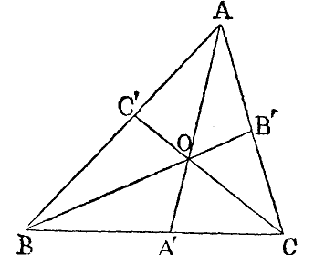
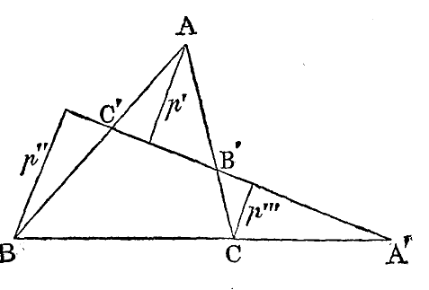

Book VI, Section I: Theory of Concurrent Lines & Transversals¶
A Sequel to the First Six Books of the Elements of Euclid (5th ed., 1888, pp. 67–81)
f. 0093 · p. 67BOOK SIXTH.¶
SECTION I.¶
ADDITIONAL PROPOSITIONS.¶
Prop. 1.—If two triangles have a common base, but different vertices, they are to one another as the segments into which the line joining the vertices is divided by the common base or base produced.
Let the two $\triangle$s be $AOB, AOC$, having the base $AO$ common; let $AO$ cut the line $BC$, joining the vertices in $A'$; then
$$ AOB : AOC :: BA' : A'C. $$
Dem.—The $\triangle ABA' : ACA' :: BA' : A'C$; and $OBA' : OCA' :: BA' : A'C$; therefore
$$ ABA' - OBA' : ACA' - OCA' :: BA' : A'C; $$
or
$$ AOB : AOC :: BA' : A'C. $$
Prop. 2 (:person:`Ceva’s <ceva>` Theorem, 1678).—If three concurrent lines $AO, BO, CO$, drawn from the angular points of a triangle, meet the opposite sides in the points $A', B', C'$, the product of the three ratios
$$ \frac{BA'}{A'C}, \quad \frac{CB'}{B'A}, \quad \frac{AC'}{C'B} $$
is unity.
Dem.—From the last Proposition, we have
$$ \frac{BA'}{A'C} = \frac{AOB}{AOC}; \qquad \frac{CB'}{B'A} = \frac{BOC}{BOA}; \qquad \frac{AC'}{C'B} = \frac{AOC}{BOC}. $$
Hence, multiplying out, we get the product equal to unity.


Cor.—This may be written
$$ AB' \cdot BC' \cdot CA' = A'B \cdot B'C \cdot C'A. $$
The symmetry of this expression is apparent. Expressed in words, it gives the product of three alternate segments of the sides equal to the product of the three remaining segments.
Prop. 3.—If two parallel lines be intersected by three concurrent transversals, the segments intercepted by the transversals on the parallels are proportional.
Let the $\parallel$s be $AB, A'B'$, and the transversals $CA, CD, CB$; then
$$ AD : DB :: A'D' : D'B'. $$
Dem.—The triangles $ADC, A'D'C$ are equiangular; therefore
$$ AD : DC :: A'D' : D'C. $$
In like manner,
$$ DC : DB :: D'C : D'B'; $$
therefore ex aequali $AD : DB :: A'D' : D'B'$.
Cor.—If from the points $D, D'$ we draw two $\perp$s $DE, D'E'$ to $AC$, and two $\perp$s $DF, D'F'$ to $BC$; then
$$ DE : DF :: D'E' : D'F'. $$
f. 0095 · p. 69
Prop. 4 (:person:`Menelaus’s <menelaus>` Theorem).—If the sides of a triangle $ABC$ be cut by any transversal, in the points $A', B', C'$; then the product of the three ratios
$$ \frac{AB'}{B'C}, \quad \frac{BC'}{C'A}, \quad \frac{CA'}{A'B} $$
is equal to unity.
Dem.—From the points $A, B, C$ let fall the $\perp$s $p', p'', p'''$ on the transversal; then, by similar $\triangle$s the three ratios are respectively
$$ = \frac{p'}{p'''}, \quad \frac{p''}{p'}, \quad \frac{p'''}{p''}, $$
and the product of these is evidently equal unity. Hence the proposition is proved.


Observation.—If we introduce the signs plus and minus, in this Proposition, it is evident that one of the three ratios must be negative. And when the transversal cuts all the sides of the triangle externally, all three will be negative. Hence their product will, in all cases, be equal to negative unity.
Cor. 1.—If $A', B', C'$ be three points on the sides of a triangle, either all external, or two internal and one external, such that the product of the three ratios
$$ \frac{AB'}{B'C} \cdot \frac{BC'}{C'A} \cdot \frac{CA'}{A'B} $$
is equal to negative unity, then the three points are collinear.
Cor. 2.—The three external bisectors of the angles of a triangle meet the sides in three points, which are collinear.
For, let the meeting points be $A', B', C'$, and we have the ratios
$$ \frac{BA'}{A'C}, \quad \frac{CB'}{B'A}, \quad \frac{AC'}{C'B} = \text{to the ratios } \frac{BA}{AC}, \quad \frac{CB}{BA}, \quad \frac{AC}{CB} $$
respectively; and, therefore, their product is unity.
Prop. 5.—In any triangle, the rectangle contained by two sides is equal to the rectangle contained by the perpendicular on the third side and the diameter of the circumscribed circle.
f. 0096 · p. 70Let $ABC$ be the $\triangle$, $AD$ the $\perp$, $AE$ the diameter of the $\odot$; then $AB \cdot AC = AE \cdot AD$.
Dem.—Since $AE$ is the diameter, the $\angle ABE$ is right, and $ADC$ is right; $\therefore ABE = ADC$; and $AEB = ACD$ (III., xxi.); therefore the $\triangle$s $ABE$ and $ADC$ are equiangular; and $AB : AE :: AD : AC$ (iv.). Hence $AB \cdot AC = AE \cdot AD$.
Cor.—If $a, b, c$ denote the three sides of a triangle, and $R$ the radius of the circumscribed circle, then the area of the triangle $= \frac{abc}{4R}$.
For, let $AD$ be denoted by $p$, we have (5)
$$ 2pR = bc; $$
therefore
$$ 2apR = abc, \qquad \frac{ap}{2} = \frac{abc}{4R}; $$
that is, $\text{area of triangle} = \frac{abc}{4R}$.
Prop. 6.—If a figure of any even number of sides be inscribed in a circle, the continued product of the perpendiculars let fall from any point in the circumference on the odd sides is equal to the continued product of the perpendiculars on the even sides.
We shall prove this Proposition for the case of a hexagon, and then it will be evident that the proof is general. Let $ABCDEF$ be the hexagon, $O$ the point, and let the $\perp$s from $O$ on the lines $AB, BC, \dots FA$, be denoted by $\alpha, \beta, \gamma, \delta, \epsilon, \phi$; let $D$ denote the diameter of the $\odot$, and let the lengths of the six lines $OA, OB \dots OF$ be denoted by $l, m, n, p, q, r$; then we have $D\alpha = lm$; $D\gamma = np$; $D\epsilon = qr$; therefore
$$ D^3 \alpha \gamma \epsilon = lmnpqr. $$
In like manner,
$$ D^3 \beta \delta \phi = lmnpqr; $$
therefore $\alpha \gamma \epsilon = \beta \delta \phi$. (Q.E.D.)
f. 0097 · p. 71Cor. 1.—The six points $A, B, C, D, E, F$ may be taken in any order of sequence, and the Proposition will hold; or, in other words, if we draw all the diagonals of the hexagon, and take any three lines, such as $AC, BD, EF$, which terminate in the six points $A, B, C, D, E, F$, then the continuous product of the $\perp$s on them will be equal to the continuous product of the $\perp$s on any other three lines also terminating in the six points.
Cor. 2.—When the figure inscribed in the circle contains only four sides, this Proposition is the theorem proved (III., 11.).
Cor. 3.—If we suppose two of the angular points to become infinitely near; then the line joining these points, if produced, will become a tangent to the circle, and we shall in this way have a theorem that will be true for a polygon of an odd number of sides.
Cor. 4.—If perpendiculars be let fall from any point in the circumference of a circle on the sides of an inscribed triangle, their continued product is equal to the continued product of the perpendiculars from the same point on the tangents to the circle at the angular points.
Prop. 7 (Circle of :person:`Apollonius <apollonius>`).—Given, in magnitude and position, the base $BC$ of a triangle and the ratio $BA : AC$ of the sides, it is required to find the locus of its vertex $A$.
Bisect the internal and the external vertical angles by the lines $AD, AE$. Now, $BA : AC :: BD : DC$ (III.); but the ratio $BA : AC$ is given (Hyp.); therefore the ratio $BD : DC$ is given, and the base $BC$ is given in magnitude and position; hence the point $D$ is given (Book I., Sec. I., Prop. 16). In like manner, the point $E$ is given. Again, the angle $DAE$ is right (Book I., Sec. I., Prop. 4, Cor. 2), and the segment $DE$ is given in magnitude and position; therefore the locus of $A$ is the circle described on $DE$ as diameter.
f. 0104 · p. 78
Prop. 14.—When three triangles which are two by two in perspective have the same centre of homology, their three axes of homology are concurrent.
Let $abc, a'b'c', a''b''c''$ be three $\triangle$s, having the point $O$ as a common centre of perspective. Now, let us consider the two $\triangle$s formed by the two systems of lines $ab, a'b', a''b''$; and $ac, a'c', a''c''$; these two $\triangle$s are in perspective, the line $Oaa'a''$ being their axis of perspective. Hence the line joining their corresponding vertices are concurrent, which proves the Proposition.
Cor.—The two systems of $\triangle$s, viz., that formed by the lines $ab, a'b', a''b''$; $bc, b'c', b''c''$; $ca, c'a', c''a''$; and the system $abc, a'b'c', a''b''c''$, have corresponding properties—namely, the three axes of perspective of either system meet in the centre of perspective of the other system.
Prop. 15.—Solutions of Geometrical Problems (pp. 78–81). Casey concludes Section I with systematic constructions applying transversals and ratio division to classic geometric problems: inscribing a square or rectangle in a triangle, constructing a triangle given its angles and perimeter, and drawing lines through given points to concur on given boundaries.